#37 Dead Man Down
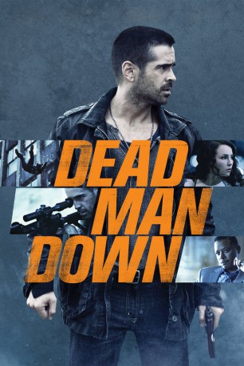 
 IMDB-Wertung: 6.5 / 10
IMDB-Wertung: 6.5 / 10  Metascore: 39
Metascore: 39 
Gangsterboss Alphonse wird von einem Phantom bedroht, das ihm kryptische Hinweise auf seine Identität, gelegentlich auch eine Leiche schickt. Victor ist neu in seiner Bande, aber ein Mann seines Vertrauens, hat er ihm doch gerade erst das Leben gerettet. Dass Victor selbst unter Druck steht, weil ihn Beatrice, die Frau aus der Wohnung gegenüber, erpresst, ahnt Alphonse nicht. An mehreren Fronten gefordert, versucht Victor sein Dilemma zu lösen und dabei auch seinen eigenen, mysteriösen Plan zu verwirklichen.
Jahr: 2013
Dauer: 118 Minuten
FSK: 16
Land: USA Studio: FilmDistrictTonspuren: DTS - ,
Untertitel:
Auflösung: 1080p (1920×800) Größe: 6942 MB
Genre: Action, Krimi, Drama, Thriller
Regisseur: Niels Arden Oplev
Drehbuch: J.H. Wyman
Soundtrack: Jacob Groth
Darsteller:
- 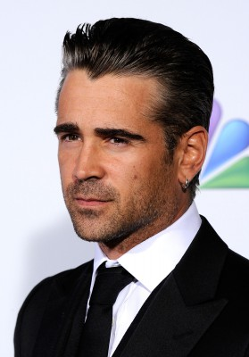 Colin Farrell als Victor
- Noomi Rapace als Beatrice
- 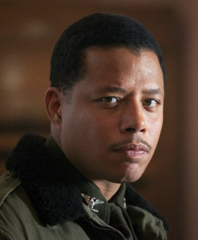 Terrence Howard als Alphonse
 Dominic Cooper als Darcy
Dominic Cooper als Darcy- Isabelle Huppert als Valentine Louzon
 Luis Da Silva Jr. als Terry
Luis Da Silva Jr. als Terry- Stu Bennett als Kilroy
- 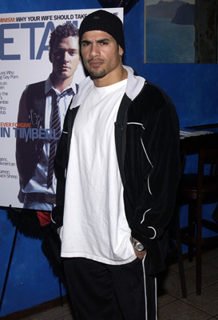 Franky G als Luco
- Declan Mulvey als Goff
- 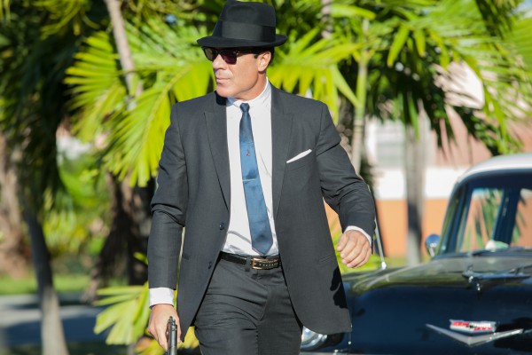 John Cenatiempo als Charles
- 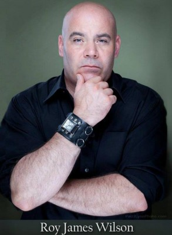 Roy James Wilson als Blotto , as Jr.
- Myles Humphus als Lance
- Stephen Hill als Roland
- Aaron Vexler als Paul
 F. Murray Abraham als Gregor
F. Murray Abraham als Gregor- 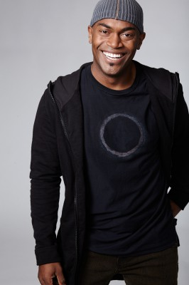 Andrew Stewart-Jones als Harry
- Krystal Tini als Harry's Girl
- Jessica Jean Wilson als Alex's Girl
- Michael McKiddy als FedEx Guy
- Beata Dalton als Anka
- Accalia Quintana als Delphine
- Jay Santiago als Latin Man
- 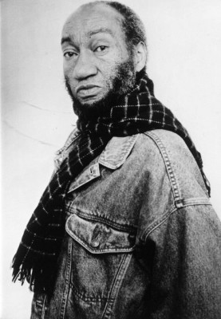 Roy Milton Davis als Derelict
- 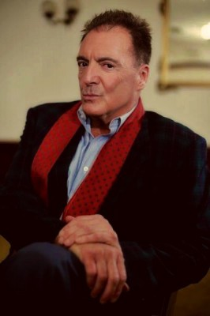 Armand Assante als Lon Gordon
- Jennifer Mudge als Florence
- Giuseppe Bausilio als Teenager in Sunglasses
- Rachel Resheff als Teenager #2
- Ante Novakovic als Peter
- 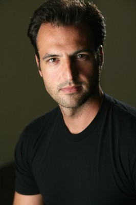 Kresh Novakovic als Carl
- Bobby Beckles als Harry's Jamaican #1
- Raw Leiba als Harry's Jamaican #2
- Hisham Tawfiq als Harry's Jamaican #3
- Nnamdi Nwosa als Harry's Jamaican #4
- 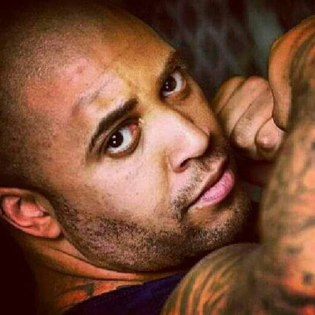 R. Marcos Taylor als Harry's Jamaican #5
- Jeremy Sample als Harry's Jamaican #6
- Stephen Mann als Albanian #1
- Aleksander Mici als Albanian #2
- Adam Wood als Albanian #4
- Dario Barosso als Street teen , uncredited
- 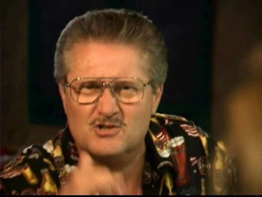 Robert Bizik als Wall Street Executive , uncredited
- Jennifer Butler als Jeep Driver , uncredited
- Bill Chemerka als Albanian Elder , uncredited
- Michael Connolly als Standin-in for Robert Vataj , uncredited
- David Kneeream als Business Man , uncredited
- Michael J. Kraycik als Bar Patron , uncredited
- Derek Larthey als Train Passenger , uncredited
- Raymond Mamrak als NYPD Officer Daniels , uncredited
- 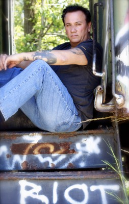 John Mitchell als Wall Street Executive , uncredited
- Justin S. Myrick als Street Teen , uncredited
- Damon Zarro als Busboy , uncredited
Datei: X:\2013(A-F)\Dead Man Down (2013, FSK16, 1920x800).mkv seit 02.02.2015
Festplatte: HD 2012(N-Z)-2013(A-H)
 Es gibt insgesamt 127 Filme in der Gruppe '2013(A-F)'
Es gibt insgesamt 127 Filme in der Gruppe '2013(A-F)'